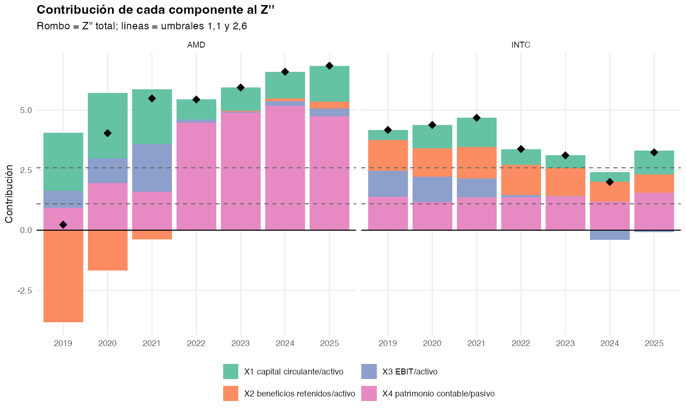
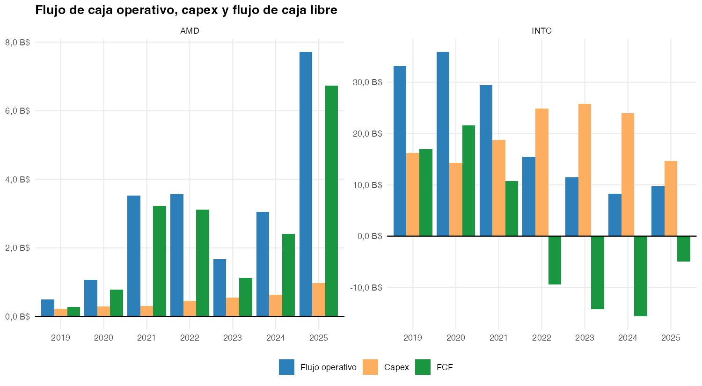

Intel vs AMD: financial health 2022–2025
Credit-risk analysis from SEC EDGAR 10-K filings · Python, R, Quarto · 2026
Question
Which of the two companies is the riskier credit, and is Intel’s apparent 2025 improvement real? This is an analysis of financial health from the accounting statements, not an investment recommendation.
Data and method
- Source: official SEC EDGAR API (companyfacts XBRL), annual 10-K filings. Main period FY2022–2025; 2019–2021 only as context, because AMD before the Xilinx acquisition isn’t comparable.
- Extraction checks: fiscal years are selected by period end date and duration, not the
fyfield. A re-extraction matched all 70 values from the first pass, and revenue was spot-checked against reported figures. Total liabilities were derived and validated against the sum of their components. - Analysis: liquidity, solvency, profitability, efficiency and cash-flow ratios; Altman Z’’ (main metric) and Z’ (secondary), with a breakdown of what drives each score and a sensitivity check.
Key findings
AMD is stronger on every block in 2025. It has net cash of $7.3B against Intel’s net debt of $9.2B, and its liquidity improves every year using cash it generates itself.
Intel’s 2025 recovery is a recapitalisation, not an operational turnaround. Its Z’’ rises from 2.01 (grey zone) to 3.24 (safe zone), but 0.96 of that 1.23-point increase comes from working capital and equity, pushed up by new shares, minority interests ($5.8B → $12.1B) and partner contributions. EBIT is still negative (−$2.2B), free cash flow is −$4.9B, and interest coverage is −2.0×. Free cash flow has been negative four years running, −$44B in total.


AMD’s Z’’ is flattered by Xilinx goodwill. Goodwill and intangibles make up 66% of its equity in 2025. On tangible equity its Z’’ falls from 6.85 to 3.69 (still safe); in 2022 it would have been 1.49 (grey).
What a credit analyst would watch next:
- Intel: whether EBIT covers interest without new capital raises, whether free cash flow turns positive, and how much dilution and minority interest grow.
- AMD: inventory days (80 → 142), gross margin, and the risk of a goodwill impairment on $25B.
Limitations
- Four years × two companies is too little data for statistical inference. Trends are described by direction, not tested.
- The Altman models were calibrated on firms from past decades, so their zones are indicative, not bankruptcy probabilities. Z’’ and Z’ put Intel in different zones, which is itself a sign of model uncertainty.
- Without market data, there’s no original Z-score, valuation ratios, credit spreads or ratings.
Full report (Spanish)
The complete report, with every table, chart and the code, is embedded below. Open it in a new tab.